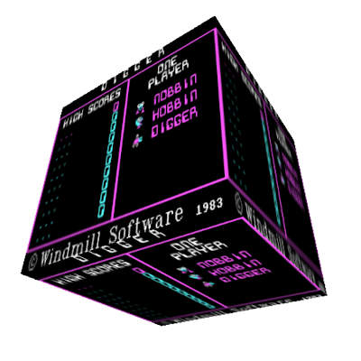

emulators
emulators is an npm package that provides emulator backends for different environments. It is the core of js-dos: emulators has a standardized API and can run emulation in browsers, workers, and Node.js. It is intended for custom embedding.

Deployment options
When you use emulators.js directly, the package is exposed as a global emulators object.
property | description |
|---|---|
pathPrefix | Prefix used to load emulator deployment files such as wasm and worker files. |
pathSuffix | Suffix appended to each deployment file path. |
version | Version of the loaded emulators build. |
wdosboxJs | DOSBox worker script file name. |
Starting backend
Every backend factory accepts initial file system data and returns a CommandInterface.
Available backend factories:
function | description |
|---|---|
dosboxDirect | Starts DOSBox in the current thread. |
dosboxWorker | Starts DOSBox in a Worker. |
dosboxNode | Starts DOSBox in Node.js. |
dosboxXDirect | Starts DOSBox-X in the current thread. |
dosboxXWorker | Starts DOSBox-X in a Worker. |
dosboxXJspiWorker | Starts DOSBox-X JSPI build in a Worker. |
dosboxXNode | Starts DOSBox-X in Node.js. |
backend | Starts a backend from a custom transport layer. |
InitFs
Backend factories accept a bundle, a file entry, a DOS config, a string, or an array of these entries.
BackendOptions
Example:
canvas is used for OffscreenCanvas rendering. audioWorklet enables the audio worklet path when the browser supports it. net lets you pass a low-level networking instance shared with another backend.
Bundle utilities
emulators can also create and edit bundles:
Creating bundles
emulators.bundle() creates a DosBundle builder. The builder contains default DOSBox config and default jsdos.json metadata. You can add files from zip archives and generate a .jsdos bundle as Uint8Array.
extract() downloads and extracts a single zip archive. The second argument is the target path inside the DOS file system.
For multiple archives, use extractAll():
You can edit config fields before generating the bundle:
By default, config files from extracted archives can override the builder config. Pass true to toUint8Array() when the builder config should be written after extraction:
Reading and updating bundle config
Use bundleConfig() to read .jsdos/dosbox.conf and .jsdos/jsdos.json from an existing bundle:
Use bundleUpdateConfig() to write updated config back into the bundle: